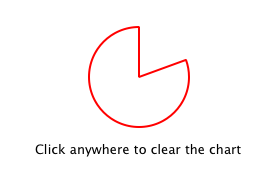

Chapter 2: Connecting to C++ Methods and Signals
Suppose we want PieChart to have a "clearChart()" method that erases the chart and then emits a "chartCleared" signal. Our app.qml would be able to call clearChart() and receive chartCleared() signals like this:

To do this, we add a clearChart() method and a chartCleared() signal to our C++ class:
...
...
...
The use of Q_INVOKABLE makes the clearChart() method available to the Qt Meta-Object system, and in turn, to QML. Note that it could have been declared as as a Qt slot instead of using Q_INVOKABLE, as slots are also callable from QML. Both of these approaches are valid.
The clearChart() method simply changes the color to Qt::transparent, repaints the chart, then emits the chartCleared() signal:
Now when we run the application and click the window, the pie chart disappears, and the application outputs:
The chart has been cleared
Try out the example yourself with the updated code in Qt's examples/quick/tutorials/extending/chapter2-methods directory.